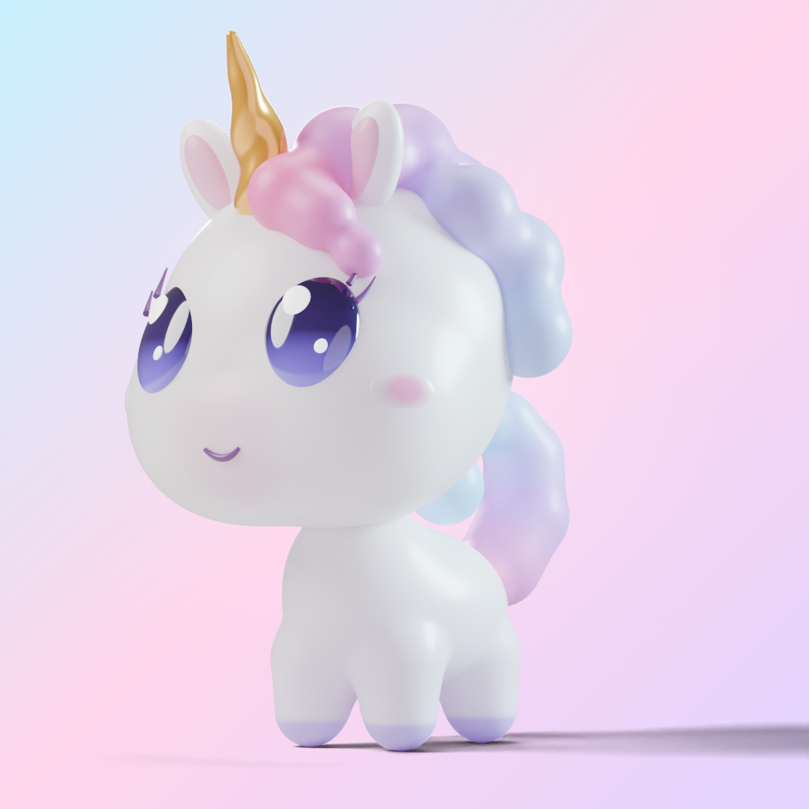
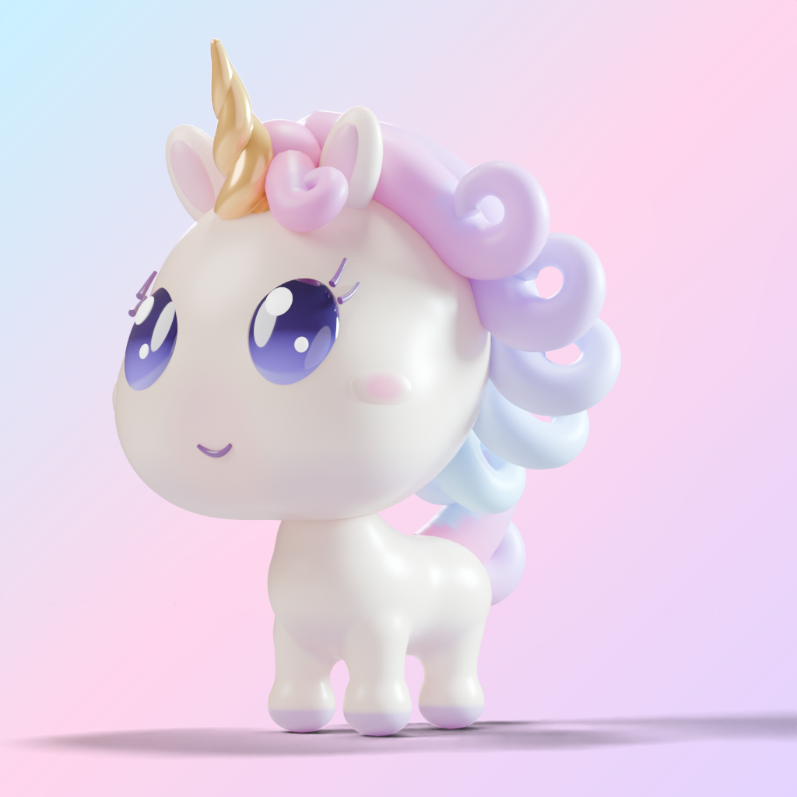
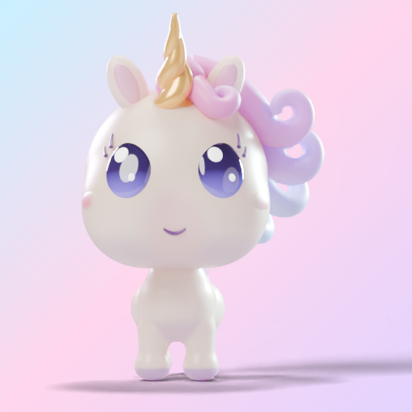
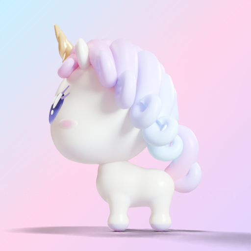
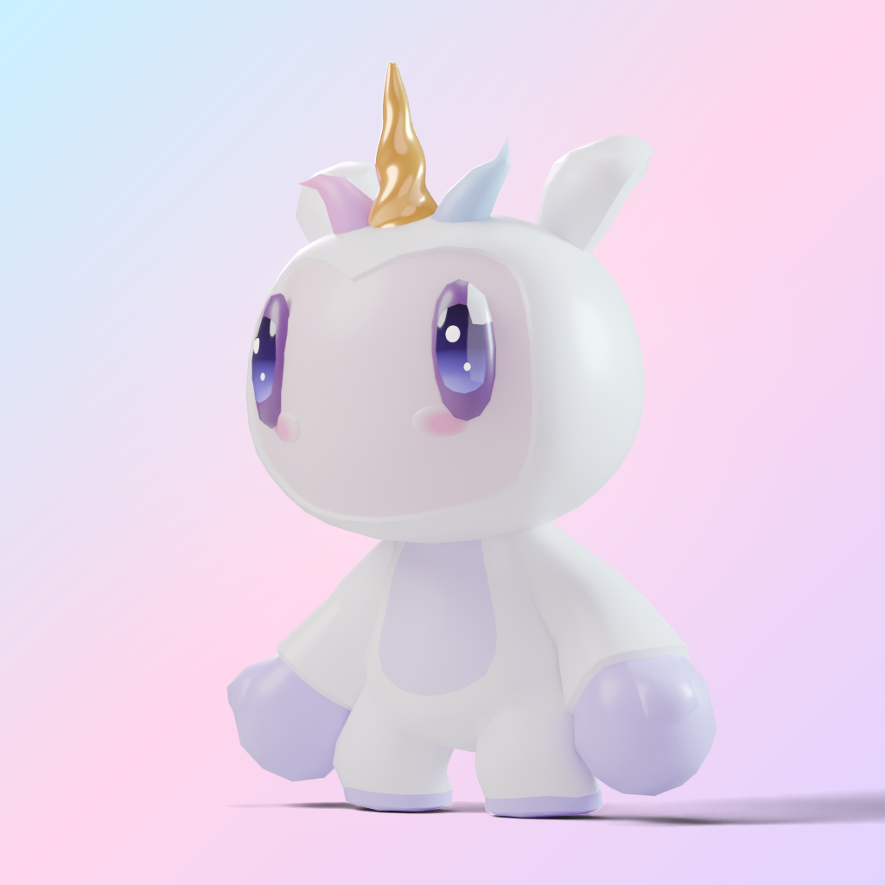

Mascotte 3D : choix forcé
Deux candidates, sans étiquette d'origine (même lumière, même fond, même caméra). Pour chacune, une seule question : « enfantin et digne de la barre ci-dessous, oui ou non ? » Puis : laquelle des deux ?
Itération A2 (2026-10-17) : défauts du verdict corrigés
Ton verdict : « candidat 1 est la bonne piste ». A2 corrige les cils, la bouche, le corps, la crinière (vraies boucles), la corne et en partie le contraste. Question : A2 est-elle mieux que la version 1 ?




Les candidates (choix du 2026-10-17 : 1)

La barre : références « 3D mignonne » (sites officiels, 2026-10-17)
Aucune app éducative vérifiée n'utilise de mascotte 3D : la référence vient des jeux. Captures locales, jamais versionnées (marques déposées).